这次联动，是双向的
Two-way两边的体量都不大，做的也都是同一件事：把文字、立绘和一段规则，做成别人愿意坐下来读完的东西。 所以这次没有谁是「合作方」、谁是「被展示方」，各自把对方需要的那部分补上，就足够了。
斗兽棋进入引擎
- 形象本就是引擎的：引擎的 Logo 与 icon 一直使用红方猪的娘化形象，这次把出处正式写进公开记录，与游戏侧的设定对齐。
- 剧情进引擎：斗兽棋的官方剧情后续将由 Shiori 引擎承载与展示。剧情本身尚未撰写，这次先把载体与规格定下来。
- 立绘进引擎：全套二次元娘化形象作为引擎的模板剧情立绘，直接供模板项目调用。
引擎进入斗兽棋
- 封装与校验：游戏的发行包借助引擎闭源组件的封装链路完成打包与完整性校验。
- 独立运行：不再依赖第三方桌游模拟器，双击即起，规则与表现都由自己说了算。
- 表现力：剧情、图鉴、结算这类需要「说」的部分，交给擅长说故事的引擎来做。
看板娘：红方的那只猪
Mascot严格说，她不是「新来的」。引擎的 Logo、教学站的 favicon、每一档 .ico，画的一直就是她——一头裹着红兜帽、抱着猪玩偶的娘化小猪。 只是此前从没在公开页面里写明她是谁、来自哪里。这次联动就把这段出处补上。
她本来就站在引擎这边，只是没写名字
在斗兽棋里，猪的攻击力只有 1，正面撞上任何动物都不占便宜。但她的规则里写着一条几乎无解的被动：只要碰到鼠，鼠就死，不需要比数值。 所以真正下过棋的人，都会在草丛边缘多看一眼这枚最不起眼的棋子。
这个形象的使用时间早于斗兽棋公开发布，也比它出现在棋盘上的时间更早。所以这次不是「给引擎新配一个看板娘」， 而是把一条本来就存在、却一直没写进公开记录的时间线补齐：同一个角色，在引擎这边是品牌标志，在游戏那边是红方最不起眼的一枚棋子。
“数值最低的那一只，往往是最难算清的那一只。”
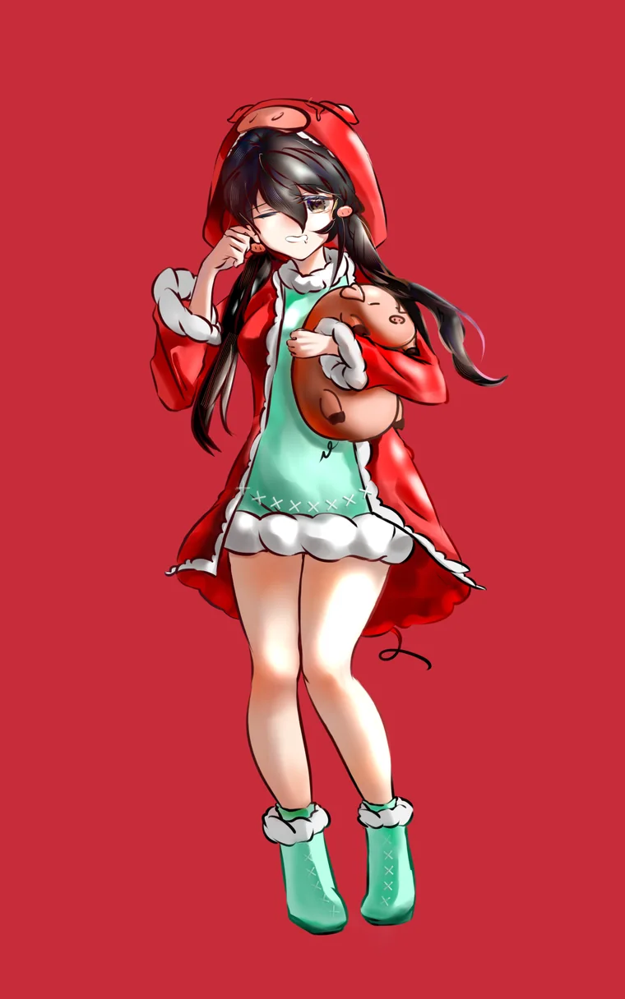
官方图标，一并放进来
Icon
引擎的官方图标不是抽象几何，画的就是她本人。透明底的竖版主视觉与多尺寸 .ico 用的是同一张图，
只是裁切范围与尺寸不同：主视觉留着全身，图标收成方形，缩到 16 像素时只剩轮廓与那顶红兜帽。
需要原始文件请前往图标页下载，这里只做展示。
logotouming.png
1320 × 1760 · 含 Alpha 通道
叠加排版与视频封面
ico256.ico
256 × 256 · 多尺寸 ICO
高 DPI 桌面与大图标视图
ico64.ico
64 × 64 · ICO
开始菜单与桌面快捷方式
十三只动物，十三张脸
Portraits下面是斗兽棋红方全套娘化立绘，也是接下来引擎模板剧情要用的立绘库。红底是这套图的原生底色，与棋盘上的红方同色， 所以它们可以直接铺在页面上，不需要额外的抠图处理。
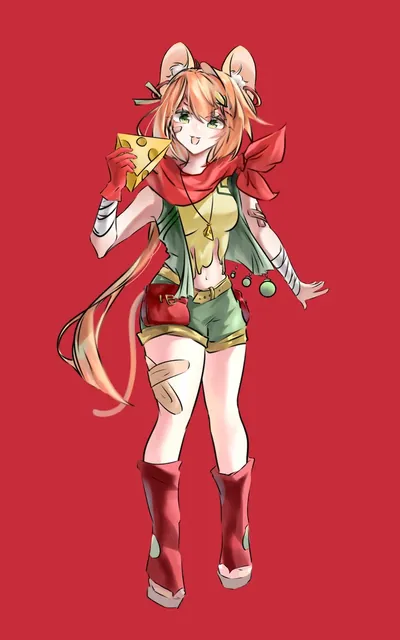
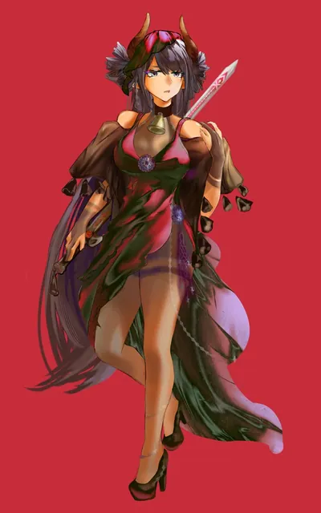
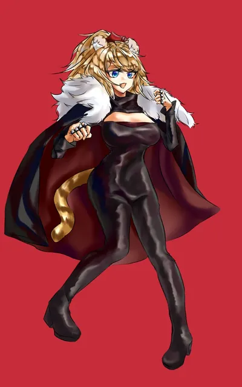
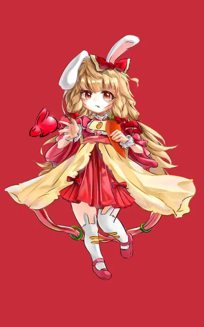
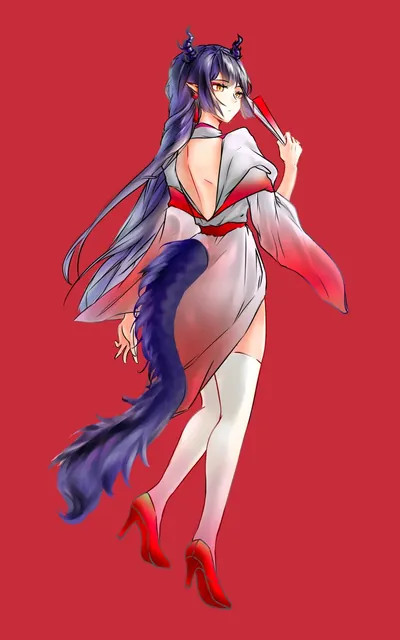
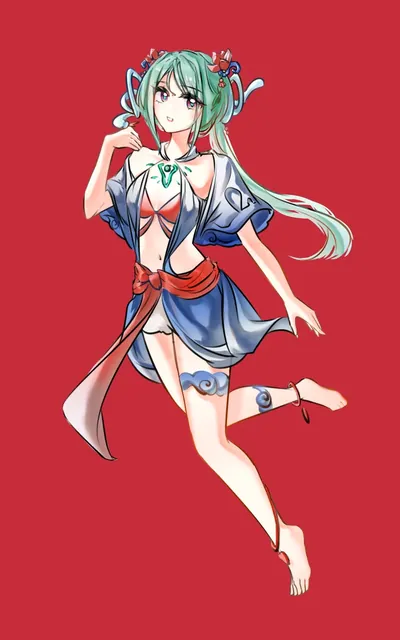
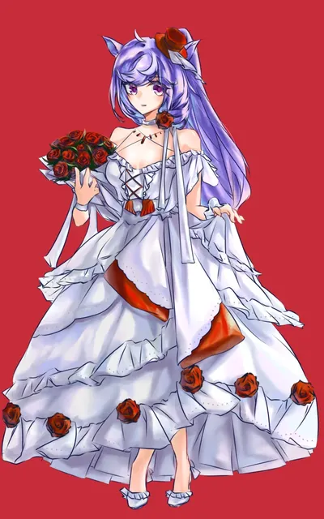
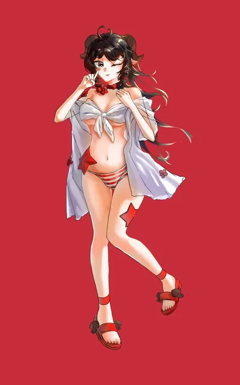
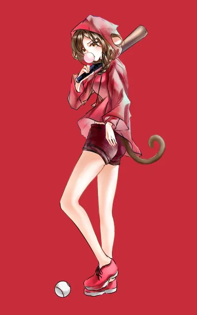
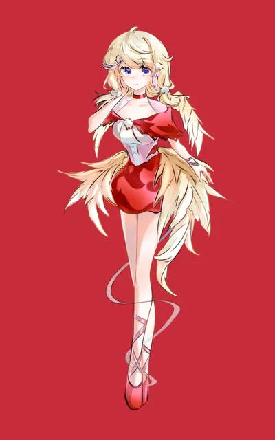
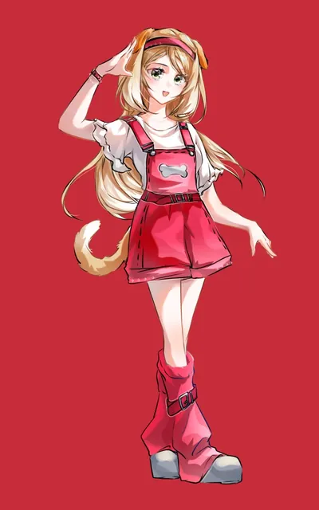
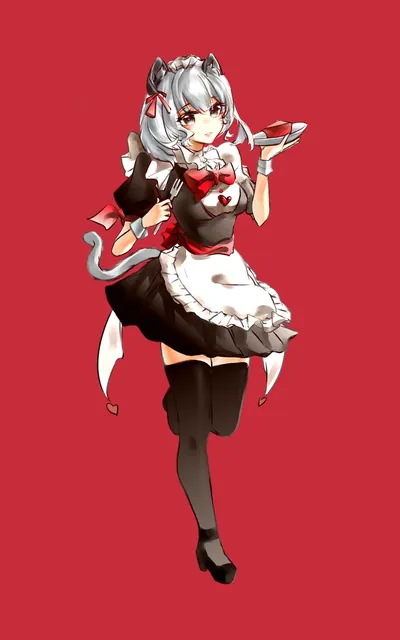
关于羊：棋盘上每方有三只羊，对应三套不同的造型（上图为其中一套）。开局时每方私下指定其中一只为真羊，另外两只是假羊——攻击力为 0，且除「羊群」外不能发动任何技能；真羊一死，剩余的假羊随之消失。 对手看不到哪一只才是真的，这套「信息欺诈」让羊成为整局里最难判断的一枚棋子，立绘因此也需要三份。猫是拓展棋子，不参与常规对局，攻击力为 -1，规则单独成篇。
程序化决定
Standalone这款游戏已经在 Steam 的 TTS（桌游模拟器）上架，规则完整、能正常开局。但它始终跑在别人的软件里： 棋子靠手动摆放，判定靠玩家自觉，技能次数要自己记，宝物归属靠喊。规则集里那些「拿一枚标识」「把标记往左移一格」「翻开扣置的羊卡」， 本质上都是在替程序记账。
于是有了这个决定：把规则从说明书里搬进程序。所有需要人记的东西交给状态机，所有需要人判的东西交给结算栈，所有需要人争的东西交给日志。
实体桌游
规则集先以纸质说明书的形式存在。28 枚棋子、9 个宝物、24 枚技能标识，全部是实体配件，判定依赖玩家的共同理解。
TTS 上架
搬上 Steam 的桌游模拟器后，能远程开局了。但棋盘是贴图，判定靠人，技能次数靠记，一局下来光是核对流程就要花掉不少时间。
程序化
把规则写成代码：行动力、结算栈、技能计数器、死亡干预、AI 对战、对局日志全部内置。规则怎么说，程序就怎么判。
需要说明的是，程序化不是「把桌游做成电子版」这么简单。桌游允许模糊，程序不允许——原说明书里每一处「由玩家协商决定」， 在程序里都必须落到一个确定的判定顺序上。所以这次落地的过程，实际上是把整套规则重写了一遍： 每个技能都拆成「原文描述」与「步骤详解」，按判定分支逐条对齐，冲突的地方留下裁定记录。
封装与发行
Package程序化的最后一步是发行。这一步借用的是 Shiori 生态里那套闭源组件的封装能力：整包资源被打进一个加密容器， 由专用宿主解密后在本机提供，双击即玩，不装运行时、不依赖浏览器、不暴露散装素材。
对玩家而言
- 双击启动，不需要额外安装任何运行环境。
- 棋盘、棋子与立绘都是包内资源，不会出现「图裂了」这类问题。
- 对局记录可导出为文本，逐条核对每一步移动与战斗。
对作品而言
- 资源不以散文件形式落地，改动任意一处都会导致校验失败。
- 发行包与开发目录解耦，换目录、换端口都不需要重新构建。
- 加密只作用于发行环节，不影响规则本身的可读与可维护。
具体实现属于闭源部分，这里不做展开。可以确定的是：它只解决「怎么把成品安全地交到玩家手上」， 不参与任何一条规则判定。
接下来会发生什么
Next剧情交给引擎
斗兽棋原本只有规则与设定，没有「讲述」的载体。这块地方留给引擎：剧情后续会以引擎项目的形式呈现， 而不是设定集或长图。需要说明的是，剧情目前还没有动笔，这次先把载体与规格定下来。
等正文写出来之后，引擎的模板剧情才会同步换成这套立绘与剧本，作为引擎能力展示的官方示例——既是游戏的宣传物料，也是引擎的活教材。
形象双向公开
这个形象在引擎侧的使用时间早于斗兽棋公开发布，这次联动把这条记录补齐并公开： 同一个角色，在引擎这边是品牌标志，在游戏那边是红方最不起眼的一枚棋子。
两边的图标、立绘、配色从此保持统一。